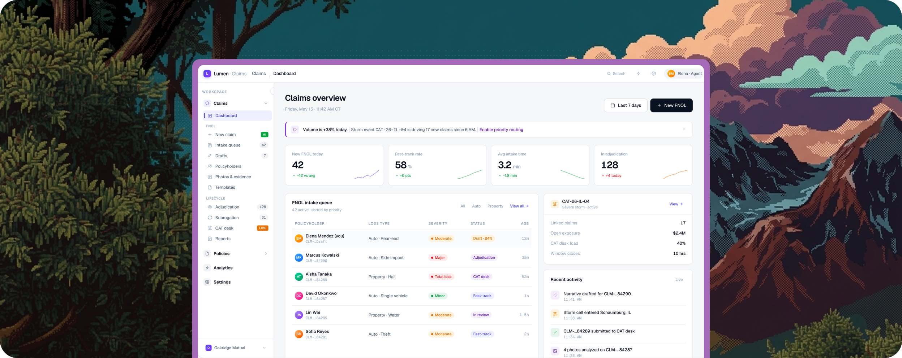

A claims workspace,
designed in Claude.
An AI-first FNOL (First Notice of Loss) concept for insurance carriers, designed and prototyped entirely in Claude rather than Figma. Stakeholders didn't review screens. They opened a working product and used it the same way an agent would, which changed how every decision got made.

st backdrop">FNOL today is a data-entry problem during someone's worst day.
Most carriers treat First Notice of Loss as a form to fill out. Agents are handed rigid templates exactly when policyholders are overwhelmed, distracted, and missing half the information. A few patterns kept showing up.
Everything is expected upfront
The system asks for complete information even when only partial details are available, including what the caller doesn't have yet.
Information arrives gradually
Claims surface over hours, sometimes days. But the intake form treats it as a single, linear capture.
Manual entry breeds errors
Agents copy data between tools. Small mistakes early multiply into bigger problems downstream.
Critical context is invisible
If a catastrophe event is active in the policyholder's area, the agent finds out later, if at all.
Each small gap at intake compounded into a larger problem further down the claim's journey.
Skipping Figma, on purpose.
Traditional handoffs hit the same wall: stakeholders interpret static screens differently and fill the gaps with their own assumptions. What gets approved isn't always what gets built. So I designed and prototyped the entire workspace inside Claude, building a real, clickable experience in code instead of flat mockups. Three things changed because of that.
Pressure-test the problem first.
I used Claude to challenge the framing before designing anything. The questions it pushed back with shaped what the workspace actually needed to solve.
Prototype directly in code.
Working states, real form behaviour, assistant flows, conditional logic. Not static screens, but something stakeholders could open in a browser and use.
Feedback as conversation.
Assistant tone, hierarchy, or alert behaviour could be tried, seen, and refined within the same session, not across a multi-day redesign cycle.
Three calls that shaped the workspace.
The brief was open. These are the choices that gave the product its shape.
An assistant, not a form.
Lumen The left pane is a guided FNOL flow that opens with a single question, "what kind of incident occurred?", and unfolds from there.
Agents can switch to Classic mode at any moment. The AI is a co-pilot, never a gatekeeper, so the system feels like it's working with the agent rather than waiting on them.
A form that knows what it knows.
Sections collapse and expand based on completion. Policy details auto-fill from lookup. Each section reports its own state, Complete, 3 of 4, Optional, so agents always know where they are.
Drafts auto-save on every keystroke. The claim survives any interruption, because intake never goes smoothly the first time.
Intelligence at the edge of attention.
A right-side panel runs quietly alongside intake: a live claim-quality scorecard, severity routing recommendations, and automatic detection of active catastrophe events.
When an incident location falls inside CAT-26-IL-04's storm window, Lumen surfaces it without being asked. The intelligence is there when needed, invisible when not.
Not a mockup. A working product.
Built inside Claude with real form behaviour, conditional logic, and the Lumen assistant. Stakeholders opened it in a browser and used it, the same way an agent would.
From approvals, to conversations.
Teams from claims operations, product, and engineering arrived with different expectations. The prototype gave everyone a shared experience to react to, and that changed how alignment happened.
Static screens. Different interpretations.
Stakeholders fill the gaps with their own assumptions. What gets approved isn't always what gets built, and alignment takes weeks.
One product. One reaction surface.
Decisions on assistant tone, hierarchy, and alert behaviour were made by interacting with the product. Uncertainty dropped fast because people reacted to the thing itself.
What this proved to me.
A short list of things I would carry into the next project.
"When the goal is alignment, a clickable AI-built prototype can be more effective than a polished Figma flow. It closes interpretation gaps, because people react to the product itself, not their assumptions about it."
Prototype before polish.
The vision became real once stakeholders could open it. The screens mattered less than the experience of using them.
AI is a design partner.
Claude pressure-tested ideas, generated working states, and let the design respond to feedback the same hour it arrived.
Alignment beats perfection.
The win wasn't a pristine spec. It was teams arriving at decisions together, faster, on something real.
The medium changes the conversation.
Static review meetings became hands-on walkthroughs. The shape of feedback changed because the artifact did.
Selected work shown here. The prototype is best experienced live.
Some flows and details aren't public. I'm glad to share the working prototype and walk through the rest in conversation.